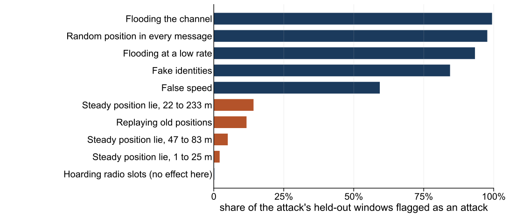
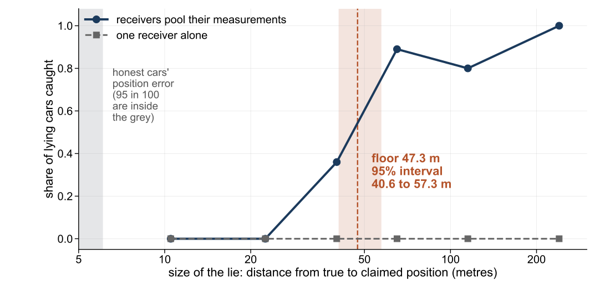
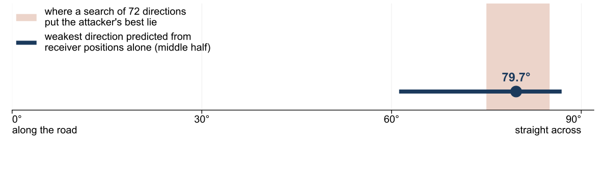
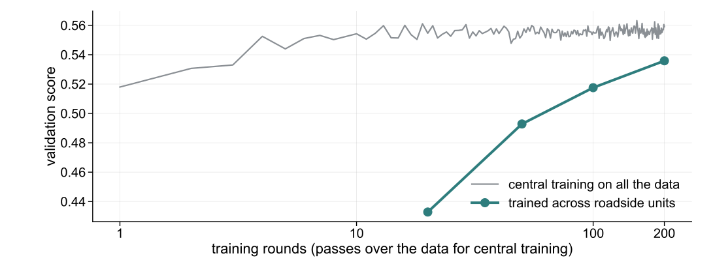
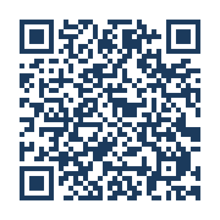

Cybersecurity for Connected Cars: Edge-Based Federated Intrusion Detection
Supervisor A/Prof Ke (Desmond) Wang. Research mentor Mr Kanwardeep Singh Gahlot. Engineering Capstone Project, School of Engineering, RMIT University, Melbourne.
Connected cars broadcast their position several times a second over a direct radio link, and the cars around them brake and merge on it. Every message is signed, which proves which car sent it. The signature says nothing about whether the position is true, so a car with valid credentials can sign a false position and every cryptographic check still passes.
A receiver has one independent piece of evidence: how strongly the signal arrived, which depends on where the sender really is.
| Approach | Checks | Leaves open |
|---|---|---|
| Message signatures [5] | Which credential sent it | Whether the content is true |
| Plausibility checks [6] | Contradictions in one car's claims | A steady offset, which has none |
| Signal strength at one receiver [7] | Whether power fits the claimed distance | Fading, which looks the same |
| Cooperative checks [8] | One position, several receivers | The size of lie they can detect |
| Existing datasets [4] | Message content | Radio measurements |
| Federated detectors [9] | Training without sharing data | Published; we compare methods |
We simulated a highway in the ns-3 network simulator with the 5G sidelink module, on which cars talk to each other directly [2, 3]. Honest cars carry realistic positioning error; attackers carry out ten kinds of misbehaviour, from false positions to flooding the channel. Every receiver records what each message claimed and what its radio measured. We found no public misbehaviour dataset over a 5G sidelink that records this.




Every result comes from simulating one straight highway, and the radio model has not been checked against real measurements. The next step is to fit the same propagation model to real sidelink measurements, then test a junction and a curve, where the receivers no longer sit in a line.

Scan for the walkthrough and a live highway monitor, where every car is judged by a detector that never saw it. cv2x-ids.vercel.app